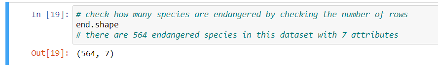

Python is a powerful programming language for spatial analyses. In this tutorial, we learn the basics of plotting shapefiles overlaid on top of a basemap, which gives us spatial context and opens doors for deeper analysis. Understanding where points, lines, and polygons exist in the world empowers data scientists to answer questions about correlated variables, consider new questions that arise throughout the analysis process, and communicate conclusions to audiences in an easily-digestible way.
We start with the basics; installing the integrated development
environment (IDE) Jupyter Notebook and installing the necessary
packages. If you prefer to use another IDE such as Visual Studio Code
and have already installed the packages geopandas, feel
free to jump ahead to the Importing Packages
section.
As a conservation biologist and an aspiring data scientist, Im interested in plotting endangered species critical habitat ranges throughout the United States. I sourced my data from the U.S. Geological Survey here. Im a big fan of USGS datasets because they are usually relatively clean and provide comprehensive metadata.
Lets map the critical habitat ranges of the Florida Bonneted bat and many other species of concern on a basemap of the United States.

Getting started with Python and Jupyter Notebooks
Transitioning from R and Rstudio to
Python and Jupyter can be difficult, as is
learning any new language or IDE. We have to say goodbye to the
exceptionally user-friendly RStudio interface with its
convenient graphical user interface and easily accessible console and
terminal windows. Lets dive into the objected-oriented language of
Python and the mysterious terminal. Personally, I struggled every step
of this journey with lots of syntax errors, merge conflicts, and endless
Googling I hope this post will help hold your hand as we make this
transition together.
First things first, if youre using Jupyter Notebooks to code in
Python, youre gonna have to install Python and Anaconda Navigator.
Install Anaconda into your home directory. (Note: there are
plenty of other IDEs for Python, such as visual studio code, which I
adopted later in my data science journey).
As I had a PC when I first started coding in Python, installing
Anaconda really threw me and my laptop for a loop. But what
better way to learn to use the terminal besides struggling to install
stuff you desperately need for graduate school? Errors and
trouble-shooting is what makes us stronger data scientists, even if we
dont want to recognize that as we fight the urge to throw our computer
out the window. Click here
for a great resource to walk you through installing
Anaconda. Either Anaconda or
Miniconda will work fine whether you have a PC or Mac.
After installing Anaconda, start your journey plotting shapefiles in
Python by opening up Jupyter Notebooks. On a Mac, I can
activate conda in the regular terminal
(conda activate). On a PC, I like to do this from the
Anaconda Prompt (the Aanconda terminal) because its tricky
to get my normal command line or Bash to recognize that
conda is indeed on my computer. My favorite workflow is as
follows:
- From the start menu, open a terminal through Anaconda Navigator
thats called Anaconda Prompt.
- Install
geopandaswithconda install geopandasin your base environment (which is the default). If that doesnt work (which would not surprise me if youre on a PC), create a new environment to do so. I found the steps on this website to be helpful: https://medium.com/analytics-vidhya/fastest-way-to-install-geopandas-in-jupyter-notebook-on-windows-8f734e11fa2b. I tried installinggeopandasin my base environment, but it was difficult to install all the correct versions of all the dependencies, so I decided to take the easy route and just make a new environment forgeopandasand any other spatial analysis packages Ill need. - Activate the environment in which you have installed thegeopandaspackage. I named that environmentgeo_env, so I typeactivate geo_env.
- Now that I am in my desired environment, I am going to navigate to
the folder in my terminal in which I want to open and save my Jupyter
Notebook. That command is
cd file/path/to/folder. You know this worked if your terminal working directory now has that file path tacked onto the end. This file path step is not required if you want to include relative file paths to import data and save your notebook.
- Download your spatial data files to this folder to make your life
easier in 2 minutes when you import your spatial data in Jupyter
Notebook.
- Open Jupyter Notebooks by typing just that:
jupyter notebook. This will tell your terminal to pop open Jupyter Notebook in your browser with your folder of choice already open and ready to go.
- In the upper right side, open a new notebook.

- Note: the Anaconda terminal window you used to open this notebook
should not be closed during your work session. It must remain open to
keep your kernel connected and give you the ability to save! If you need
to run any terminal commands after you have already opened this
notebook, such as if you need to download a package or check a file
location, just open up another terminal window and enter the
geo_envenvironment to do so.
Importing Packages
(modules)
For plotting shapefiles, youll want to import the following packages:
import pandas as pd
import numpy as np
import geopandas as gpd
import matplotlib.pyplot as plt # plot our data and manipulate the plot
import contextily as ctx # add a default basemap under our polygons of interestIf you do not already have contextily installed, use a
conda forge command to install it in the terminal in your
geospatial environment.
As a proponent of reproducibility and crediting those who provided the data, I like to include a markdown chunk following my package imports that includes a URL link to where I found my data, along with a citation if necessary and any notes about how I downloaded it for myself or anyone else working through my code:
Data source: US
Fish and Wildlife - contains .shp, .dbf, and .shx polygon files
that relate to critical species habiata in the United States
- I chose the first zip file you see on this site
- USFW provided great metadata
Importing Data
Lets import your data! Now is the time youre gonna thank yourself
for placing your data in the same folder as your Jupyter notebook. We
will use geopandas to read in the
shapefile with your polygons or lines or points of
choice (you will not find a combination of these shapes in the same
shapefile, because thats just how the world works). You might take a
look at all the data files and feel a little overwhelmed at the choices
due to the way that shapefiles and their metadata are stored separately
(.shp, .dbf, .shx, .xml, and so on). In this example we are trying to
import a shapefile of polygons, so that
.shp file is the only one you need to read in:
gdf = gpd.read_file('CRITHAB_POLY.shp')
# Take a look at the first rows:
print(gdf.head())
# Ask Python how many rows and columns are in this dataframe
print(gdf.shape)My only complaint with the head() function is that it
returns the first rows in a plain text format:

If you want to see the first and last few rows of the dataframe in a
format that looks more familiar (like how Rstudio presents dataframes),
try just typing the name of the data frame, gdf:

This shapefile I read in contains polygons that designate the
critical habitat ranges for many endangered and threatened species in
the United States. I chose to name it gdf for
geodataframe. Expect that you will be modifying this dataframe
as you go through this mapping process (subsetting columns, filtering
for certain factor levels, etc.) so you will likely be tacking on more
words to gdf to tell these modified versions apart. Start
naming things simply and clearly, and get more specific as you process
your data.
Practice cimple commans like calling all the column names in the dataframe:
print(gdf.columns)Check the factor levels for the columns listing_st:
status_levels = gdf.listing_st.unique()
status_levelsUsing U.S. Fish and Wildlife as an example, now that you know the factor levels of a categorical variable, you can subset for only endangered species, only threatened species, etc.

Play around with your dataframe a bit; Google some of the species,
subset the columns, search for NA values, or take the
average of a column. After you make a structural change, its a good
habit to check the status or dimensions of your dataframe.
Check the number of rows and columns: 
Print the latitude and longitude pairs that make up a particular
polygon: 
Setting the Coordinate Reference System
As a last step before you plot, you have to make sure you set the data to the desired coordinate reference system (CRS). This is pretty standard for all kinds of spatial data, since your data might come with an unfamiliar CRS or have no CRS at all if you are making a mask, a raster, or executing similar geospatial processes. For information about coordinate reference systems, check out this guide.
Three common CRSs are as follows:
- WGS84 (EPSG: 4326), which is commonly used for GIS
data across the globe or across multiple countries
and
- NAD83 (EPSG:4269), which is most commonly used for
federal agencies
and
- Mercator (EPSG: 3857), which is used for tiles from
Google Maps, Open Street Maps, and Stamen Maps. I will use this one
today because I want to overlay my polygons onto a Google basemap with
contextily.
Set the CRS to ESPG 3857. This code may take a minute to run. In Jupyter Notebook, you know that code chunk is still chuggin away if you see an asterisk in brackets to the left of the code chunk:

Plotting Shapefiles on a Basemap
Use the plot() function from matplotlib and make the polygon color represent each species:
gdf_3857.plot(column='comname',
figsize=(20,20))
Note that you did not have to call the package to use the function
plot(). Instead, you can name the dataframe which you want
to plot, which is gdf_3857 in this case, then
plot() and add arguments and supplemental plot structure
changes as you go.
The fig size can be whatever you want. 10-20 is usually good enough.
You have finer control over the degree of zoom of the map with the
arguments xlim() and ylim(), anyway. These
polygons are just floating in space, so lets add a basemap to give us
geographical context:
crit_hab_polys = gdf_3857.plot(column='comname',
figsize=(20,20))Notice that I used an argument in the plot function, setting the
column = 'comname', which is a column within the
gdf_3857 geodataframe that specifies the common name for
the species in that row. This argument sets a unique color to each
common name, which will help us tell the difference between each
species habitat on the map, even if 1 species habitat is composed of
multiple polygons.
ctx.add_basemap(crit_hab_polys)
# Set the axis limits to zoom in on just the lower 48 states, rather than viewing the entire world:
plt.ylim([2350000,6350000])Since the basemap within the contextily package is of
the entire world, we need to specify the x-limitations and y-limitations
for our map so we can zoom in on the United States to best understand
our data. The default x and y units were in the millions, so I specified
my units in millions, too. When considering if I should plug in positive
or negative values, I considered the way that coordinate reference
systems are designed with positive values for North and East, and
negative values for South and West. I considered that the United States
is north of the equator, so I should have positive values for the min
and max y. As for the magnitude of my values, I simply looked at the map
for a starting point and played around with different numbers until I
got the view I wanted.
plt.xlim([-14000000,-6000000])Notice that these values are negative. Along similar thinking to how
we decided on our y limitation, these negative values are the result of
how coordinate systems are designed. Consider the prime meridian (which
lies at 0 degrees in the East and West directions) with West being
negative. Since the United States are to the West of the prime meridian,
we know that the x-range for our zoom should be negative. As for the
magnitude, I just played around with the numbers until I got the
East-West orientation that encompassed the United States. Use the
show() function in matplotlib to tell Python
to show the most recently created graph:
plt.show()


You did it! Welcome to the wonderful world of geospatial data in Python.
Future Analysis
With this basic skill mastered, you can now dive deeper into this data to determine if variables are correlated across space. Considering state borders, you might ask which endangered species occupy ciritical habitat in your home state? and investigate the different wildlife protection policies across the United States. Alternatively, you could approach this data from an environmental perspective and ask which natural biomes contain the most critical habitat for these endangered species? Are these habitats degrading at a faster rate than those that contain less critical habitat?
A Local California Use Case Example
Living in Santa Barbara, Im interested in the critical habitat of the Southern California Steelhead Trout. Steelhead trout is a beautiful fish species that interbreeds with resident rainbow trout in many coastal regions throughout California, which are split into distinct population segments:
I was lucky enough to conduct field work with these migratory fish in 2020-2021 through the California Department of Fish and Wildlife and the Pacific States Marine Fisheries Committee. I grew to appreciate their vital role in ecosystem processes and the culture of indigenous people who have interacted with them for centuries. This fish is currently in the process of being listed as a California endangered species starting in December of 2021, which will hopefully expand critical habitat range, increase monitoring of the populations, and help enforce illegal fishing and pollution regulation in their habitat. We can check out the steelheads critical habitat range before and after 2021 to see how it expands over time and space.

Sources & supplemental information on listed endangered species in the United States:
- Florida
bonneted bat photo
- U.S.
Fish and Wildlife data
- U.S. Fish and Wildlifes
Environmental Conservation Online system
- U.S.
Fish and Wildlife listed wildlife species
- this includes links for data on each each species and a map of their
habitat
- Southern California Steelhead Trout
- Southern California Steelhead Trout distinct population segement map
- Southern California Steelhead Trout
- Python logo